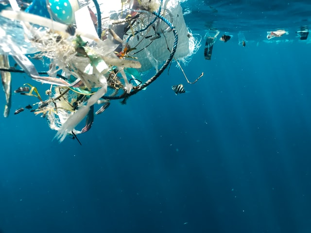

“Only we humans make waste that nature can’t digest.”
- Charles Moore, Oceanographer

“Only we humans make waste that nature can’t digest.”
- Charles Moore, Oceanographer
.jpg)
Plastic pollution is one of the biggest concerns of the millennial times. Companies are trying to minimise plastic but now is the time to reduce its usage to 0. As a matter-of-fact, since 1950’s, only 10% of the plastic has been recycled. If the statistics of the National Geographic are to be believed, half of all plastics ever manufactured have been made in the last 15 years. Production increased exponentially, from 2.3 million tons in 1950 to 448 million tons by 2015. Production is expected to double by 2050.
Microplastics are spread throughout the water column and have been found in every corner of the globe, from Mount Everest, the highest peak, to the Mariana Trench, the deepest trough.
• Single-use plastics: Of all the plastics manufactured, 40% of them is used only once. This includes items such as polythene bags, bottled water, personal care bottles (shampoos, face creams, hair oil etc.), packaged food items which our supermarkets are replete with etc.
• Improper disposal of plastics: Single-use plastics are one of the main causes of improper disposal. Most of the plastic is consumed domestically and so people dispose of them non-judiciously and they end up in landfills, water resources, air and eventually harming the environment by converting into microplastics and other detrimental substances.
• Reduce-Reuse-Recycle: This principle was once applicable when the plastic load on earth wasn’t pernicious. But now, the cycle is somewhat unbalanced. If we recycle plastic, we cannot eliminate it completely from the environment and it will remain in some form or the other. About 6.3 billion metric tons of that has been turned into waste; of that, only 9% was recycled and 12% was incinerated. If we reuse, on the other hand, it will be disposed of in the near future and then the problem of eliminating it will arise. If we reduce the usage, then yes, we are contributing towards the cause, however, we are at a position where total abandonment of plastic is required.
They are breaking down further into smaller and smaller pieces. Plastic microfibers, meanwhile, have been found in municipal drinking water systems and drifting through the air. Nearly 700 species, including endangered ones, are known to have been affected by plastics. Microplastics have been found in more than 100 aquatic species, including fish, shrimp, and mussels destined for our dinner plates. Once plastics break down into microplastics and drift throughout the water column in the open ocean, they are virtually impossible to recover.
And even if we recycle plastic, it will be present in the environment in some way or the other and will eventually contribute to the making of microplastics.
.jpg)
.jpg)
To reduce their usage to 0, an idea can be used in reducing the manufacture of shampoo bottles which are one of the highest contributors to plastic being used in each and every household across the globe. A centralised system of shampoo-refilling vending machine can be set up to refill shampoo instead of purchasing a whole new bottle.